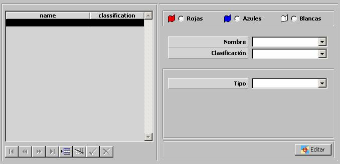

Zonas Tácticas

Mediante esta tabla se especifican todas las Zonas Tácticas incluidas en el Ejercicio, clasificadas por bando. Durante la ejecución del ejercicio, a cada unidad se le presenta en la Pantalla Táctica las zonas tácticas correspondientes a su bando.
Para cada zona se especifican los siguientes parámetros:
Rojo / Azul / Blanco: Bando al que pertenece la Zona Táctica.
Tipo: Puede tomar los siguientes valores:
Editar: Mediante este botón se abre la ventana de Preparación de Escenarios, sobre la que se mostrará una Herramienta de Dibujo con la que se podrá especificar gráficamente la zona táctica. Ver la descripción de esta herramienta en el apartado Preparación de Escenario.